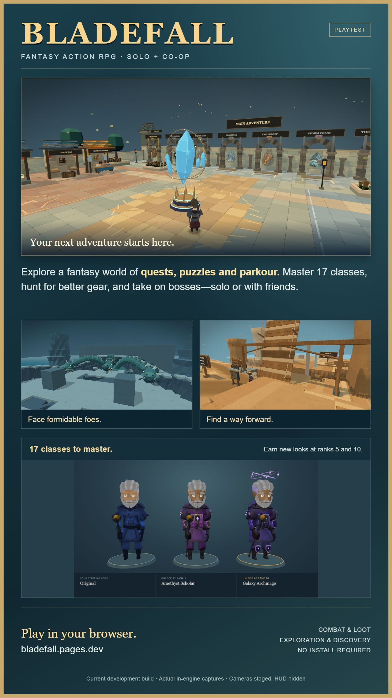
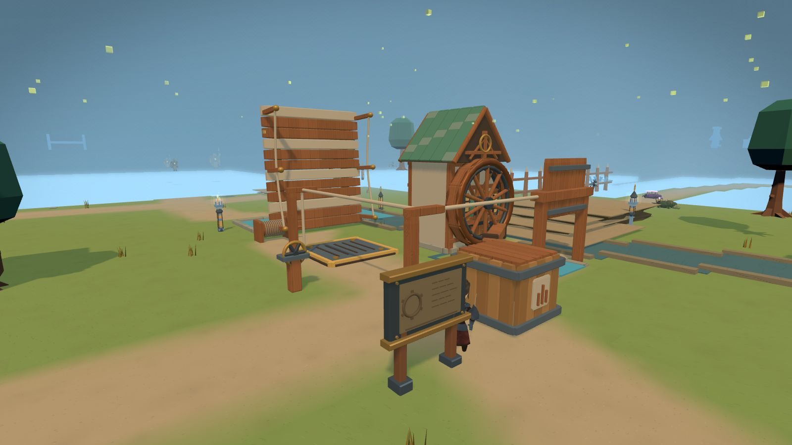
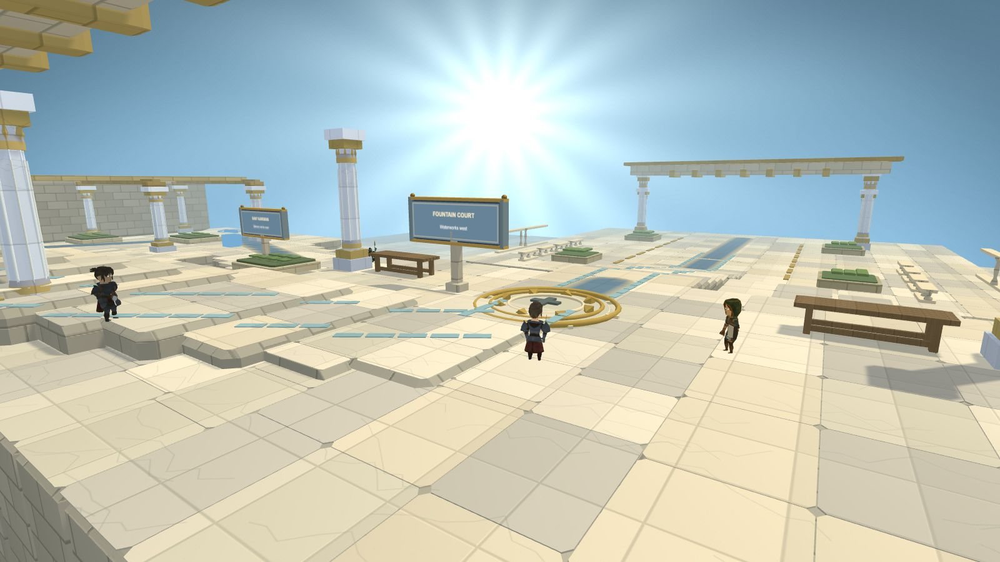
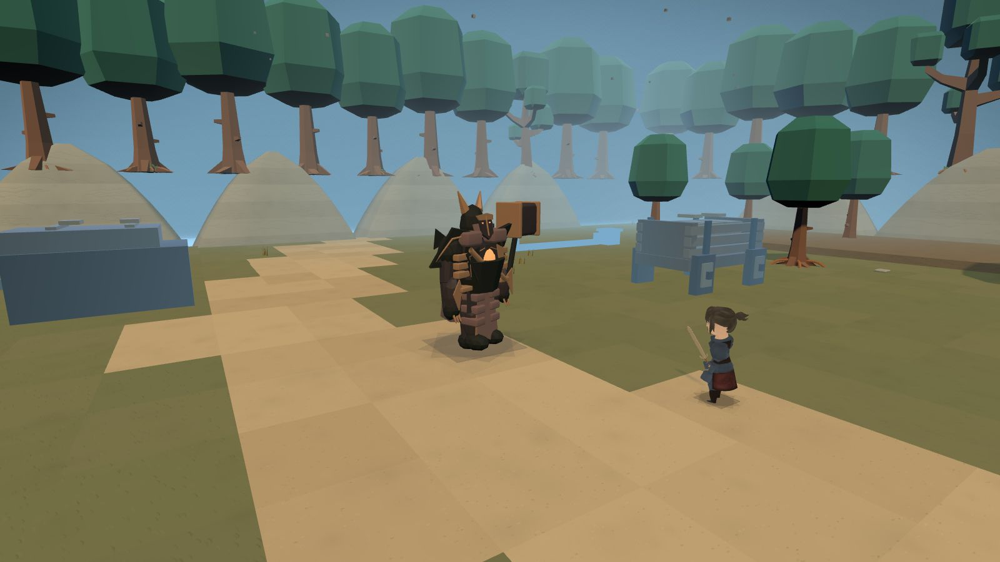
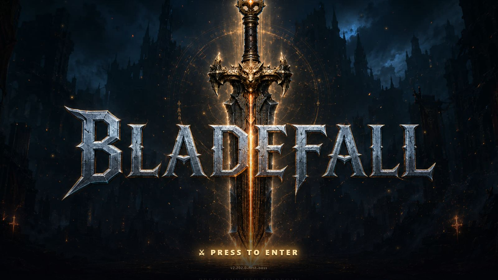

BLADEFALL
A fantasy action RPG in your browser. Explore quests, puzzles and parkour, master 17 classes, and hunt for stronger gear—solo or with friends.

One image. A whole adventure.
Save the portrait poster and send it in a text. It brings together the Waystation, Hollow Pass, the Hydra and the Mage’s earned appearances.
Download poster JPG ↓1280 × 2276 · Original screenshots below are 1600 × 900.








